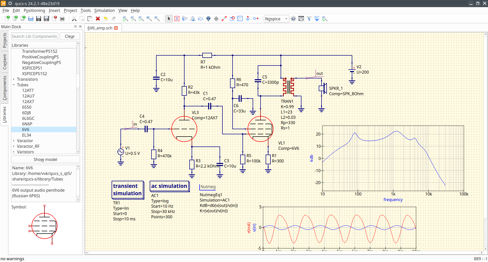

Qucs-S: Qucs with SPICE
Download links
The latest stable release is Qucs-S-24.3.0
(Installation instructions...)
Contribution guide
Qucs-S is open for everyone's contribution. See here for contribution guide.
Donations
Qucs-S accepts donations using Boosty: https://boosty.to/qucs_s
|
News
- July, 23, 2024 Qucs-S-24.3.0 is released! See
Release notes and dowload link
- March, 25, 2024 Qucs-S-24.2.0 is released! See
Release notes and dowload link
- February, 16, 2024 Qucs-S-24.1.0 is released! See
Release notes and dowload link
- October, 26, 2023 Qucs-S-2.1.0 is released! See
Release notes and dowload link
- August, 19, 2023 Qucs-S-2.0.0 is released! See
Release notes and dowload link
- June, 07, 2023 Qucs-S-1.1.0 is released! See
Release notes and dowload link
- April, 23, 2023 Qucs-S-1.0.2 is released! See
Release notes and dowload link
- February, 4, 2023 Qucs-S-1.0.1 is released! See
Release notes and dowload link
- October, 30, 2022 Qucs-S-1.0.0 is released! See
Release notes and dowload link
- July, 01, 2022 Qucs-S-0.0.24 is released!
- February, 20, 2022 Qucs-S-0.0.23 is released! Application ported to Qt5.
- January, 19, 2020 Qucs-S-0.0.22 is released!
- October, 31, 2018 Qucs-S-0.0.21 is released!
- June, 24, 2018 Added packages for Ubuntu 18.04
- October, 31, 2017 Qucs-S-0.0.20 is released!
- October, 25, 2017 Added packages for CentOS and Fedora
- January, 26, 2017 Qucs-S 0.0.19 is released! The first stable release.
- July 25, 2015 Qucs-S RC1 released.
|
Simulation example with Qucs-S and Ngspice

(More screenshots...)
Publications
Qucs-S is also a research software. Check our publication list.
|
What is Qucs-S?
Qucs-S is a circuit simulation program based onQucs
circuit simulator. The "S" letter indicates SPICE. The purpose of the Qucs-S project is
to use free circuit simulation kernels (Ngspice, Qucsator, Xyce) with the unified GUI based
on Qt6 toolkit. It merges the power of SPICE and the simplicity of the Qucs GUI. Qucs-S is not
a simulator by itself, but it requires to use an external simulation backend with it. Qucs-S
allows to use the following open-source simulation kernels:
- Ngspice is recommended to use.
Ngspice is powerful mixed-level/mixed-signal circuit simulator. The
most of industrial SPICE models are compatible with Ngspice. It has an
excellent simulation performance and powerful postprocessor.
Google Skywater 130nm PDK supports Ngspice.
- XYCE is a new SPICE-compatible
circuit simulator written by Sandia from the scratch. It supports basic
SPICE simulation types and has an advanced RF simulation features such
as Harmonic balance simulation.
- QucsatorRF for RF and microwave circuits design.
It provides advanced models for such devices microstrip lines and waveguides. QucsatorRF is not
SPICE compatible. The general purpose circuits simulation is also possible but not recommended.
- SpiceOpus is developed by the Faculty of
Electrical Engineering of the Ljubljana University. It based on the
SPICE-3f5 code
Screenshots
- NE5532 amplifier using SPICE model
|
- JFET mixer

|
- Single-ended tube amplifier

|
- Hi-Fi bipolar transistor audio amplifier

|
(to top...)
Main features
- Basic and advanced simulation types: AC, DC, transient, S-parameter, FFT, distortion, pole-zero,
parametric sweep.
- Advanced RF simulation with Qucsator RF backend;
- Quick switching of the simulation kernel without application restart;
- Tuner simulation mode
- Direct support of SPICE models from components datasheets;
- Basic SPICE components: RCL, BJT, MOSFET, JFET, MESFET, switches;
- Advanced SPICE components: Equation-defined sources and RCLs, transmission lines;
- Parametric circuits (.PARAM) and SPICE postrprocessor (Nutmeg)
- Basic SPICE simulations: DC, AC, TRAN;
- Advanced SPICE simulation: DISTO, NOISE, SENS (added in 0.0.20), Spectrum analysis;
- Harmonic balance analysis with XYCE and Qucsator RF backends;
- Nutmeg script simulation: direct access to the SPICE code and
construct your own simulation;
- XYCE script simulation type;
- XYCE digital devices library;
Installation
Linux
Binary packages
The usage of binary packages is the preffered way to get Qucs-S.
-
The DEB and RPM packages for Qucs-S are prepared with openSUSE build service. Check the package for your distribution
here Then click on
distribution icon and find the installation instructions. You may need to install ngspice manually.
-
Arch and Manjaro users may install Qucs-S from AUR
-
The packages for AltLinux are available from Sysyphus repository here
AppImage for all Linux distributions
You can run Qucs-S on all Linux platforms using AppImage without building it from source. This way is preferrable, if there is
no prebuilt package for your distribution and/or you have not root access to the machine. Otherwise it is recommneded to install
the binary package from the repository (see the section above).
Download AppImage and make it executable, then run it from the console or your file manager. Please
note that AppImage doesn't include Ngspice and you need to install it using system package manager.
Building from source
If binary packages are not available for your distrubution, then you will need
to build Qucs-S from source:
- Install all necessary dependencies: Qt, C++ compilers, etc.
- Install desired simulation backends: Ngspice, XYCE, SpiceOpus. You can use all
these backends together or only one of them. QucsatorRF backend is shipped with Qucs-S.
- Download and unpack tarball
- Use CMake to configure.
- Invoke make and make install
Refer to the README.md of the Qucs-S github repository for the recent build instructions.
FreeBSD
Qucs could be installed on FreeBSD using ports or binary package.
Windows
Windows portable package could be downloaded as zipped distribution. Unpack and launch qucs-s.exe
from bin subdirectory. Only 64-bit windows packages are available:
You need to download and install
Ngspice and/or XYCE manually from official websites: http://ngspice.org/
https://xyce.sandia.gov respectively.
You may also use Windows installer. Launch the installer executable and follow the installation wizard guide.
Windows installer includes both Ngspice and QucsatorRF simulation kernels. You may download and update simulation
backends manually and specify the simulator paths in application settings.
MacOS
Use homebrew to install Qucs-S. Run below command to install latest Qucs-S.
brew install --cask ra3xdh/qucs-s/qucs-s@nightly
Linux
Run qucs-s from the the command line or launch Qucs-S icon in your desktop
environment menu after the installation. Ngspice is set as the default simulation
backend at the first run. You can change it later in the application settings.
Windows
For portable package run the qucs-s.exe binary to launch application. You may create a desktop shortcut for it.
(to top...)
Developers
Project founders:
See the full contributors list at the Github repository page: https://github.com/ra3xdh/qucs_s/graphs/contributors
Contribution guide
Steps to contribute
Source code of the Qucs-S is hosted at the Github in the following repository:
https://github.com/ra3xdh/qucs_s. You
need to clone this repository if you wish to contribute.
git clone https://github.com/ra3xdh/qucs_s
cd qucs_s
git checkout -b your_feature
Use CMake to compile Qucs-S. After you make changes, prepare a
pull request to Qucs-S repository.
Branching model
Currently there are two main branches in Qucs-S repository:
- master reflects the state of the latest Qucs-S release.
- current is development branch. Use this branch to target patches.
- QucsatorRF repository hosts
the RF simulation backend code. It has a separate release system.
Build instruction (development branches)
Refer to the README.md of the Qucs-S github repository for the recent build instructions.
(to top...)
Documentation
Publications
Qucs-S is not a simple circuit simulator, but also a research software. Please
cite our articles, if you are using Qucs-S in your research.
- Brinson, M. E., and Kuznetsov, V. (2016) A new approach to compact semiconductor device modelling with Qucs Verilog-A analogue module synthesis. Int. J. Numer. Model., 29: 1070-1088. (BibTeX)
- D. Tomaszewski, G. Głuszko, M. Brinson, V. Kuznetsov and W. Grabinski, "FOSS as an efficient tool for extraction of MOSFET compact model parameters," 2016 MIXDES - 23rd International Conference Mixed Design of Integrated Circuits and Systems, Lodz, 2016, pp. 68-73. (BibTeX)
- M. Brinson and V. Kuznetsov, "Qucs-0.0.19S: A new open-source circuit simulator and its application for hardware design," 2016 International Siberian Conference on Control and Communications (SIBCON), Moscow, 2016, pp. 1-5. (BibTeX)
- M. Brinson and V. Kuznetsov, "Improvements in Qucs-S equation-defined modelling of semiconductor devices and IC's," 2017 MIXDES - 24th International Conference "Mixed Design of Integrated Circuits and Systems, Bydgoszcz, 2017, pp. 137-142.
(BibTeX)
- M. Brinson and V. Kuznetsov, "Extended behavioural device modelling and circuit simulation with Qucs-S" International Journal of Electronics, 2017, pp.1 - 14
(BibTeX)
{kind=link}